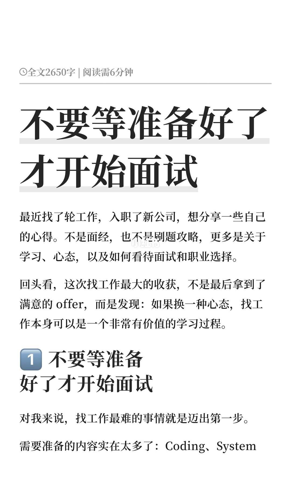
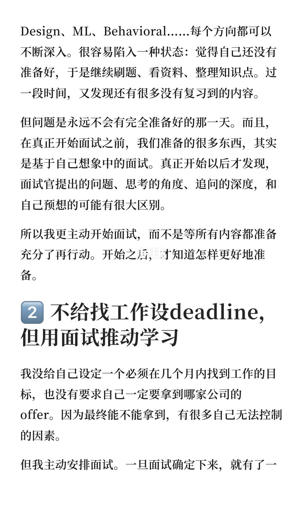
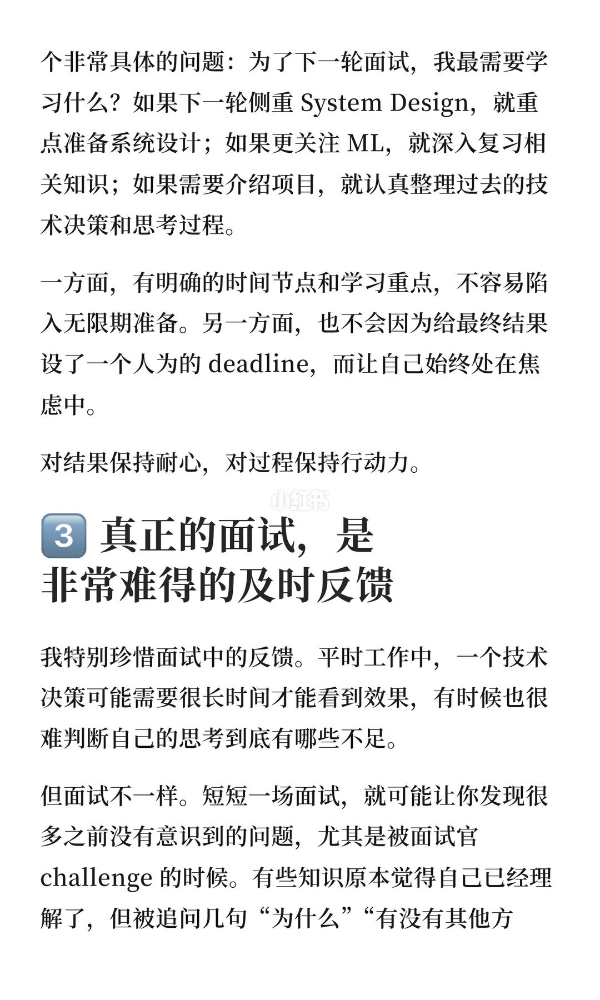
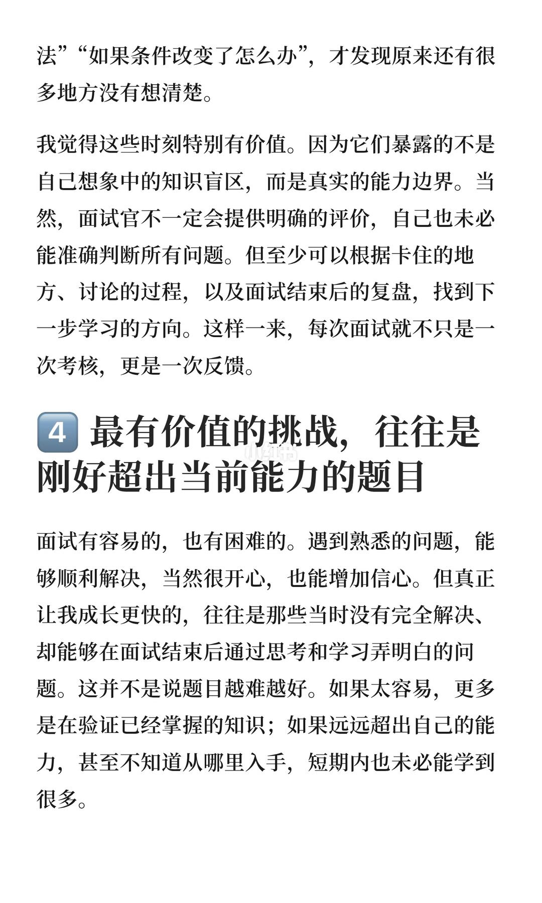
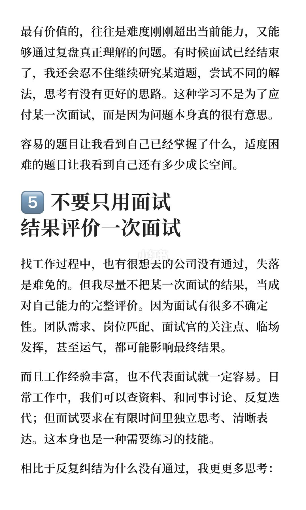
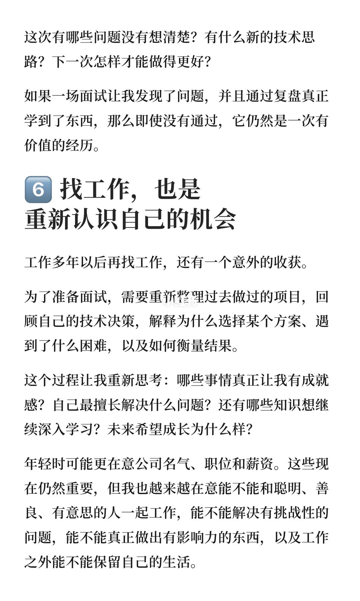
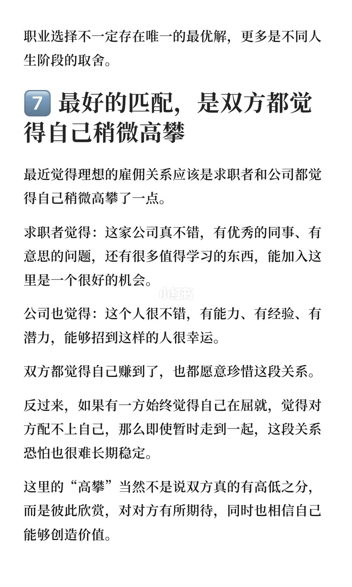
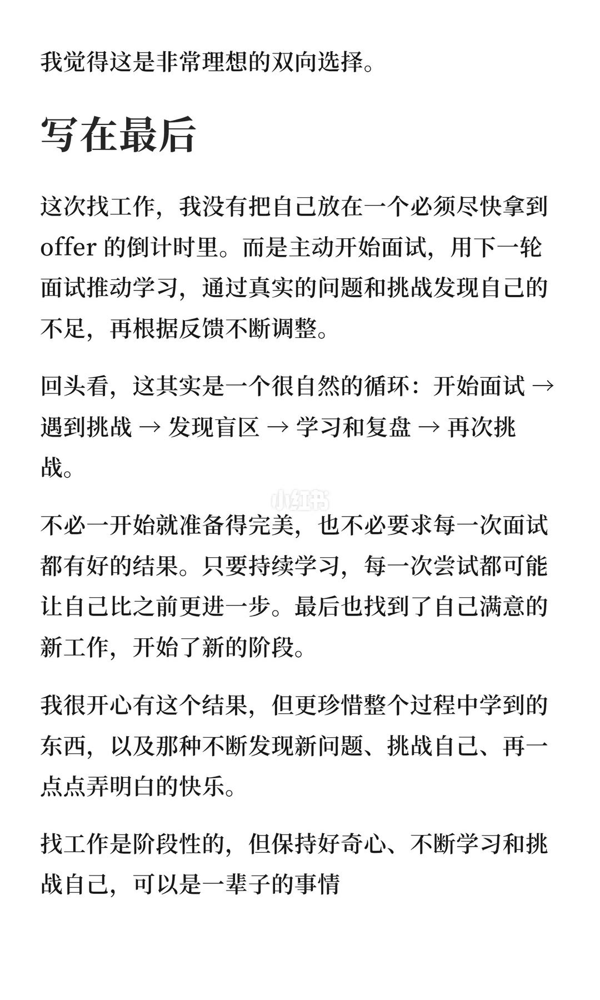

内容要点
准备清单可以无限加长；真正拉开差距的是尽早进入真实面试回路，用追问暴露盲点，再把复盘变成下一轮的优先级。
总结
开始面试不是终点冲刺，而是学习系统的传感器；结果有噪声，闭环可积累。
图文实录
1. 先行动，再用面试校准准备
开篇：跳槽最大收获不是 offer，而是把求职本身当成学习过程。

[1/8] 开篇：跳槽最大收获不是 offer，而是把求职本身当成学习过程
Opener: the real win isn't the offer — it's treating the search as learning
2. 面试驱动学习，而不是 deadline 驱动焦虑
准备无终点；用约好的面试当里程碑，倒逼优先级。

[2/8] 准备无终点；用约好的面试当里程碑，倒逼优先级
You'll never feel fully ready; booked interviews create deadlines that prioritize learning
3. 把 challenge 当诊断，不当羞辱
真面试是稀缺反馈：几十分钟暴露日常看不到的思维漏洞。

[3/8] 真面试是稀缺反馈：几十分钟暴露日常看不到的思维漏洞
Real interviews are scarce feedback — minutes reveal blind spots work hides
4. 太易只验证，太难无从下手
最有价值的题：刚好超出能力、复盘后能真正学会。

[4/8] 最有价值的题：刚好超出能力、复盘后能真正学会
Best challenges sit just beyond ability — tough enough to learn, reachable via review
5. 结果含噪声，过程可复盘
别用一次结果给能力下总评；追问卡点与下次怎么练。

[5/8] 别用一次结果给能力下总评；追问卡点与下次怎么练
Don't judge ability by one result; ask what stuck and how you'll practice next
6. 面试是自我重写提纲
求职逼你重梳项目与决策；价值观从名气薪资扩到人与问题。

[6/8] 求职逼你重梳项目与决策；价值观从名气薪资扩到人与问题
Job hunt forces project storytelling; values expand beyond brand and pay
7. 单向屈就难长久
理想匹配：双方都觉得略微「高攀」——互相珍惜预期。

[7/8] 理想匹配：双方都觉得略微「高攀」——互相珍惜预期
Ideal match: both sides feel slightly lucky — mutual appreciation, not settling
8. 求职阶段性，学习终身性
闭环：开始面试→遇挑战→找盲点→学习复盘→再挑战；好奇可终身。

[8/8] 闭环：开始面试→遇挑战→找盲点→学习复盘→再挑战；好奇可终身
Loop: interview → challenge → blind spots → learn → challenge again; curiosity is lifelong